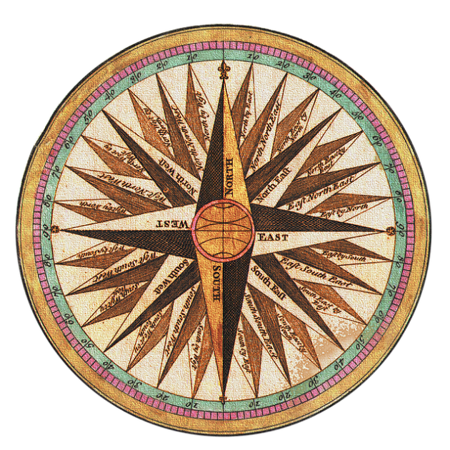

Beyond Stars

Beyond Stars is an interactive web app that lets users explore the night sky as seen from exoplanets. Using data from NASA's Gaia star catalog, the app provides a unique 3D view of stars and constellations from various exoplanetary perspectives. It also features an educational gaming mode to engage users in discovering celestial objects.
Tech Stack
- Languages: Python, JavaScript, HTML/CSS
- Frameworks & Libraries: Three.js, WebGL
- Tools: Figma (for UI/UX design)
- Data Source: ESA Gaia DR3 Star Catalog
Links
UA Course Compass

UA Course Compass is a web-based software application designed to help students pursuing a Bachelor of Science in Information Science at the University of Arizona effectively manage their 4-year course plan. The platform provides personalized course recommendations, a four-year planning tool, interest surveys, and email reminders to streamline the academic planning process, leveraging machine learning and data scraping technologies to enhance the student experience.
Tech Stack
- Languages: HTML, CSS, JavaScript
- Frameworks & Libraries: Node.js, Selenium
- Database: PostgreSQL
- Machine Learning: NLP algorithm for course recommendations
- Other Tools: Email API for notifications, Data scraping from university course catalogs